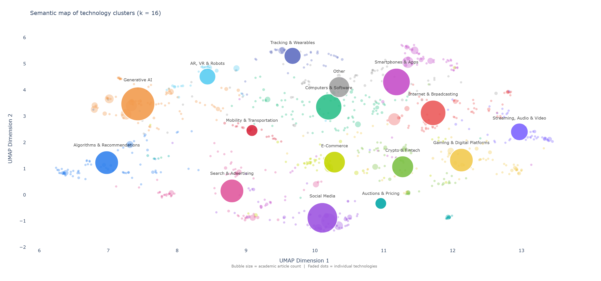
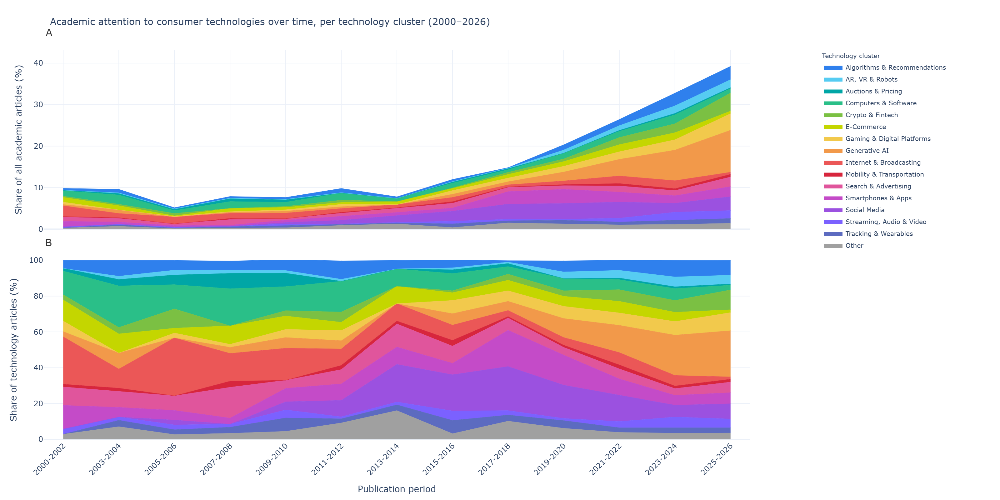

| ID | Technology Cluster | Number of Unique Technologies | Number of Mentions | Technologies |
|---|---|---|---|---|
| 1 | Algorithms & Recommendations | 71 | 109 | <span style=" font-size: 5pt; line-height: 1.1;" >adaptive choice based conjoint, adaptive personalization system, ai based recommendations, ai generated recommendations, algorithm, algorithm controlled products, algorithmic advice, algorithmic decision making, algorithmic dynamic pricing, algorithmic marketing, algorithmic transparency, algorithmically induced recommendations, attribute filters, automated group recommender systems, automated recommender systems, beauty filters, choice based conjoint, collaborative filters, comparison matrix, content based filtering algorithm, content enhancing features, content recommendation algorithms, content removal features, curation algorithms, customization configurators, customization websites, deep learning based recommender system, e commerce recommendation systems, electronic recommendation agents, email personalization, high adaptivity algorithms, hover and filter features, instagrams algorithmic recommendations, intelligent recommendation systems, internet recommendation systems, mass customization, mass customization interfaces, mass customization platforms, mobile adaptive personalization systems, mohr a novel multi objective hierarchical recommender, nikeid online configurator, online product configurators, ordering convenience functionality, parameter based systems, personalization, personalization algorithm, personalized content, personalized pricing, personalized rankings, personalized recommendations, point accrual systems, price recommender application, product recommendation systems, product recommendations, query auto completion features, query recommender system, ranking algorithms, recommendation, recommendation agent, recommendation algorithms, recommendation hyperlinks, recommender systems, reputation systems, screening filters on dating websites, search ranking algorithms, social filtering algorithm, stable matching algorithm, textual analysis, unpersonalized ranking systems, user generated links, video based automated recommender system</span> |
| 2 | AR, VR & Robots | 29 | 54 | <span style=" font-size: 5pt; line-height: 1.1;" >augmented reality technology, computer mediated environments, conversational robo advisors, extended realities, human ai hybrid decision making, human robot collaboration, humanoid robots, humanoid service robots, immersive virtual reality hardware, markstrat simulation, metaverse, metaverse environment, physical robots, robot service agents, robotic technology, robots, service bots, service robots, simulator, social augmented reality, virtual and physical realities, virtual collaboration technology, virtual communities, virtual environments, virtual fitting rooms, virtual integration, virtual object, virtual reality, virtual reality headsets</span> |
| 3 | Auctions & Pricing | 15 | 26 | <span style=" font-size: 5pt; line-height: 1.1;" >airbnbs smart pricing algorithm, algorithmic pricing, buy it now auction mechanism, course bidding mechanism, digital auctions, dynamic discounts, dynamic electricity pricing, dynamic pricing, electronic auctions, internet auction, name your own price auctions, online ad auction mechanism, online auctions, online auctions with proxy bidding, real time bidding</span> |
| 4 | Computers & Software | 93 | 134 | <span style=" font-size: 5pt; line-height: 1.1;" >3 d product visualization, 3d printing technologies, animations, anthropomorphic consumer products, anthropomorphic technology, assisted reproductive technologies, avatars, blender, branded skins, carbon emissions labeling, cloud based services, cloud storage, commercial kits used in genetic engineering, computer, computer assisted self explication, computer hardware, computer server, computer software, computer technology, consumer genetic testing, cosmetic self enhancement technology, delivery and installation services, desktop, digital and mobile communication, digital communication options, dockless shared micromobility services, duplication technologies, dynamic random access memory chips, electronic products, electronic services, fax machines, fertility technologies, food packaging, hardware adoption, hardware technology, healthcare technology, home technology, information breach, information communication technologies, information devices, information system, information technologies, integrated computer networks and services, internet based customer self service applications, internet of things, internet of things systems, internet technology, large electronic signs, machine writing technology, morphing software, mrna technology, multifunctional products, needs based systems, nontraditional cookstoves, open source products, open source software, operating systems, pc, pc processor, personal computer, power tool, preapproval tools, product packaging, product placement, r software, r software package, self service, self service technology, sensor enabled shelves, slot machine, smart irrigation controller, smart objects, smart products, smart service systems, software, software as a service, software product, software variety, spreadsheets, sustainable environmentally friendly technologies, technological innovation, technology, technology enhanced narratives, technology facilitated communication, technology mediated services, technology product categories, telecom and information technology products, time saving technologies, transparent packages, unix and windows nt operating systems, web based information service, web hosting services, web service ifttt</span> |
| 5 | Crypto & Fintech | 57 | 93 | <span style=" font-size: 5pt; line-height: 1.1;" >account based technologies, account verification features, automated payments, automated teller machines, bitcoin, bittorrent piracy channels, blockchain, blockchain enabled digital goods, blockchain encrypted digital goods, blockchain marketplace for nfts, blockchain technology, card based technologies, charity crowdfunding platforms, consumer finance platform, couples money management mobile app, credit card, credit card payments, crowdfunding, crowdfunding platform, crypto wallet designs, cryptocurrencies, digital finance, digital payment technologies, financial management app, financial technology app, financial technology platforms, internet banking, internet market, massive online peer to peer game, micro crowdfunding platform, money management app, non fungible token, non fungible token marketplace, online crowdfunding, online crowdfunding platforms, online fundraising platforms, online gaming markets, online payment systems, open banking, p2p networks, peer to peer fundraising platforms, peer to peer investment platform, peer to peer lending, peer to peer lending website prospercom, peer to peer platform with bilateral ratings, peer to peer sharing marketplaces, person to person payment methods, personal finance app, reward based crowdfunding, rfid tags, scanners at cash registers, sharing economy platform, smart card technology, stock market simulation, ticket resale platforms, virtual stock markets, web based transactions</span> |
| 6 | E-Commerce | 51 | 91 | <span style=" font-size: 5pt; line-height: 1.1;" >airbnb, comparison shopping websites, customer relationship management, digital book platform, digital textbooks, e book, e book platform, e commerce, e commerce cart retargeting, e commerce channels, e commerce environments, e commerce platform, e commerce technologies, e commerce web site, e learning, electronic merchants, electronic peer to peer markets, electronic purchase methods, electronic shopping, electronic shopping service, for sale by owner platform, internet based stock trading, internet retailers, internet shopping, internet shopping agents, itunes store, offline shopping, online buying services, online consumer to consumer platforms, online food delivery platform, online freelance marketplaces, online grocery shopping, online hotel reservation site, online retail environment, online retailing, online shopping, online shopping community, online shopping environments, online shopping paradigm, online store, online supermarkets, pharmaceutical direct to consumer advertising, point of sale terminals, shopping carts with parallel handles, shopping support functionality, simulated online bookstore, smart shopping carts, technology enabled shopping devices, telecommunication service, television advertising, third party online marketplaces</span> |
| 7 | Gaming & Digital Platforms | 68 | 108 | <span style=" font-size: 5pt; line-height: 1.1;" >active game moderation, collaborative digital platform, collaborative internet technologies, computer game, computer games, consumer feedback platforms, consumer to consumer platform, counter strike global offensive, crowdsourcing website amazon mechanical turk, data science competition platform, digital content platforms, digital publishing platform, dod platform groupon, file sharing, game difficulty adjustment, gamification, gamified interactions, gaming platform, home sharing platforms, home sharing services, jump rope, massive open online courses, massively multiplayer online role playing game community, microsofts xbox game pass, mobile gaming, navigation platforms, online crowdsourcing platforms, online educational platforms, online environment, online freelance platform, online healthcare platform, online idea generation platforms, online knowledge sharing platform, online mapping services, online media platform, online medium, online physician rating platforms, online physician ratings, online platform, online prepayments, online programming platform, online pure labor service platforms, online review platforms, online sales platforms, online services, online technology, online travel platform, online video game, platform for short term accommodations, platform moderation media, platform recommendations, platforms, primary platforms, rating platforms, resale platforms, review aggregating platform, review platforms, roblox platform, short term rental platforms, sonys playstation plus, technology platforms, user generated content platforms, video game console, video game markets, video game platforms, video games, video gaming, web based asynchronous ideation game</span> |
| 8 | Generative AI | 82 | 225 | <span style=" font-size: 5pt; line-height: 1.1;" >active machine learning, agentic ai, ai, ai based conversational interfaces, ai based diagnostic and therapeutic interventions, ai chatbots, ai companions, ai customer service chatbots, ai driven service encounters, ai powered appearance manipulation, ai training, anthropomorphic voice assistants, artificial agents, artificial empathy, artificial intelligence, artificial intelligence agents, artificial intelligence assistants, artificial intelligence enabled voice assistants, automated calling, automated help desks, automated solution, automatic upgrades, automation, autonomous agents, autonomous products, behavioral targeting, captcha, chatbot agents, chatgpt, companion ai, computer agents, computerized helpers, conjoint based decision aids, conversational agents, decision support aid, digital assistant, digital assistants with humanlike features, electronic agents, electronic decision aids, emotion quotient tool, explainable artificial intelligence, generative artificial intelligence, generative pretrained transformer models, generative text to image models, gpt 4, individual based agents, intelligent agents, interactive decision aids, interactive feedback decision aids, interactive generative ai, internet travel agents, large language model, machine learning, medical ai, multimodal deep learning architecture, nade, natural language generation, natural language processing, natural language understanding, online travel agents, openais gpt 35, pre trained sentiment analysis model, responsible ai product, sales force automation applications, secondary meaning access via the automatic route test, sentiment analysis, smart agents, text boxes, text messages, text to emoji to emotion converter, virtual assistants, virtual chatbots, visual generative ai, voice assistant functions, voice assisted search, voice based interfaces, voice recognition, voice shopping, voice synthesis, voice technology, web based virtual advisers, zestimate</span> |
| 9 | Internet & Broadcasting | 63 | 127 | <span style=" font-size: 5pt; line-height: 1.1;" >analog technologies, black and white television, broadband internet, cameras, digital audio, digital audio players, digital camera, digital cinema technologies, digital conversion of movies, digital device, digital distribution, digital distribution channels, digital distribution of news, digital downloading, digital goods, digital healthcare services, digital home video releases, digital interfaces, digital media, digital movie offers, digital music track, digital photo printer, digital product, digital rights management, digital selling, digital services, digital subscription products, digital technologies, digital television service, digital video recorder, digitization of movies and projection technology, film photography, gallery speaker views, hps print on demand service of user created magazines named magcloud, internet, internet access, internet access at home, internet channel, legitimate online distributors of digital downloads, media technology, mobile television, new media, panoramic sunroof, pay tv, pictographs, programmatic television, recorded music technology, residential rooftop solar panels, screens on a television, smart speaker, social tv, subscription model, subscription services, television, television broadcasters, transmedia, tv advertising technology, tvs, usenet, vcrs, videotape recorders, web cameras, yahoo movies web site</span> |
| 10 | Mobility & Transportation | 22 | 27 | <span style=" font-size: 5pt; line-height: 1.1;" >antilock brakes, automobile sharing systems, autonomous vehicles, bicycle sharing programs, car sharing platform, car sharing services, diesel cars, dockless electric scooter sharing industry, driver accept dispatch system, driving simulations, e scooters, electric vehicles, ethanol compatible vehicles, ethanol fuel, ev infrastructure, foreign cars, hybrid vehicle, ride sharing services, ridesharing platforms, self driving car, toyota prius hybrid, vehicle stability assist</span> |
| 11 | Search & Advertising | 66 | 109 | <span style=" font-size: 5pt; line-height: 1.1;" >ad blockers, ad blocking technologies, ad platform, adaptive ad sequencing, advertisement avoidance technology, affiliate websites, complaint web sites, computer and web based interviewing tools, consumer search tools, cookies, custombuilt google like search engine, digital ads, direct mail, dotcom, e mail channels, e mails, expanded barcodes, google display ads, google maps, google trends, i link, informational website, internet websites, marketing analytic software, mass advertising, model based dashboard, notifications, online advertising, online advertising platforms, online information search, online keyword search technology, online search advertising, online search data, online search intermediaries, online searches, organic search, paid search ads, personal web sites, prepopulated search bars, product search maps, product web pages, programmatic advertising, retail analytics dashboard, search aid technologies, search engine, search engine advertising, search engine marketing, search engine optimization, search engine product recommendations, search engine services, search function at an online store, search platforms, social advertising, stickkcom, third party cookies, travel search engines, web, web based tool, web page, web search engines, web sites, web3, website, website interfaces, website morphing, world wide web</span> |
| 12 | Smartphones & Apps | 69 | 148 | <span style=" font-size: 5pt; line-height: 1.1;" >56k modems, app, app based technologies, blackberry, branded mobile apps, cell phone minute sharing plans, cell phone service, cell phones and service plans, cellular phones, cellular services, communication technology, endomondo mobile app, free to play mobile game app, google workplace mobility, gps, health app, in app mobile push notifications, interactive app, iphone, location based mobile advertising, loyalty program management app, loyalty programs, mental health apps, metered paywall, mobile, mobile app, mobile banner advertising, mobile calendar, mobile console, mobile coupons, mobile dating platform, mobile devices, mobile diaries, mobile display advertising, mobile hailing technology, mobile in app advertising, mobile in feed advertising, mobile internet, mobile marketing technologies, mobile money, mobile operators, mobile payment, mobile phone, mobile phone app usage data, mobile phones in cars, mobile platform, mobile promotion, mobile services, mobile technology, mobile telecommunications, mobile telephony, multibrand coupon website, new telecom service, non advertising based mobile apps, omni coupons, omnichannel model, patient portal app, phone calls, smart phone application, smartphone, smartphone apps, smartphone based shopping, subscription companys smartphone app, telecommunications, telemarketing, telephone purchase channel, telepresence, toll free technical support hotlines, wireless telecommunications</span> |
| 13 | Social Media | 66 | 182 | <span style=" font-size: 5pt; line-height: 1.1;" >adchoices program, blogs, brand community platforms, chinese microblogging platform sina weibo, corporate social media, earned social media, facebook, facebook brand pages, facebook page, facebook page as a platform for firm initiated promotional communications, facebook page as a platform for paid advertising, facebook page likes, facebooks advertising platform, fact checking tools, google news, instagram, internet social networking site, linkedin, location based mobile marketing, microblogging, microblogging platform twitter, microblogging service twitter, mobile news app, music social networking website, news aggregators, newspaper websites, online behavioral advertising, online communities, online dating platform, online platforms such as twitter, online social media tools, online social network, online social sites such as facebook, online socialization agents, owned social media, proactive social media tools, promoted tweets, reactive adp, social geotagging, social media, social media ads, social media applications, social media marketing, social media platform, social media platform of twitter, social media posts, social media support platform, social media technologies, social media technology affordances, social network data, social network game, social networking sites, social networking tools, social networks, social networks and technologies, social platforms, social tagging, sponsored search, surveys, technologies that include social features, tiktok, tweeting, twitter, web forums, wechat moment ads, yelp</span> |
| 14 | Streaming, Audio & Video | 44 | 60 | <span style=" font-size: 5pt; line-height: 1.1;" >analog synthesizers, cd audio, cd players, cds, color television, compact disc player, compressed digital audio mp3s, consumer generated media, digital music platforms, digital single lens reflex camera, dvd players, live streaming, live streaming platform, livestream shopping platform, music streaming, music streaming services, on demand content, on demand streaming services, online media, online media survey, online music platform, online streaming, pay per article options, peer to peer music file sharing at napster, short form video sharing platforms, short form video social platforms, six speaker audio system, slow motion video, spotify ad platform, spotify app, streaming platforms like spotify and youtube, streaming service, subscription video on demand platform, twitch, user generated content video streaming platforms, video analytics, video conferencing platforms, video game live streaming, video on demand service, video sharing platforms, video streaming platforms, videoconferencing, vinyl music, youtube</span> |
| 15 | Tracking & Wearables | 35 | 56 | <span style=" font-size: 5pt; line-height: 1.1;" >a b testing, biometric eye tracking, biometrics, calorie tracking app, computer mouse, cursor tracking paradigm, diagnostic tests, eye tracking, eye tracking equipment, eye tracking technology, eye tracking tests, facial recognition, facial recognition system, fitbit device, fitness smartwatches, fitness trackers, implicit association test, in store ambulatory eye tracking, mammography, mouse tracking method, mouselab software, nutri score, obesity prosthesis, online breast cancer detection tool, online tracking, physiological self tracking, playtime tracking feature, self tracking technologies, simplified nutrition scoring system, treadmill, typeface design, wearable tracking devices, wearables, web based facial expression tracking, web based facial tracking system</span> |
| 16 | Other | 70 | 85 | <span style=" font-size: 5pt; line-height: 1.1;" >360 degree rotation, a b testing tool, air bags, ambient light luminance, ambient light switches, apple newton, auto accept system, automated digital screens, ballpoint pen, cb radios, conjoint poker game, contour as face framework, cross modal learning tool, dial readout scales, diffuser, e cigarette, electronic shelf labels, electronic word of mouth, enhancement pharmaceuticals, fixed devices, fountain pen, genetically modified foods, genetically modified organisms, glp 1 receptor agonists, glycoprotein miraculin, handheld scanners, ipad, kiosks, medical device, microtargeting capabilities of set top boxes, multi dynamic neural poisson system, multiarmed bandit, mwallet, new pharmaceuticals, nielsen people meter, online decision support tools, onscreen buttons, over the counter nicotine replacement therapies, pharmacological products, portable electroencephalography systems, prescription drugs, preventative device, printer, question and answer technology, radio, radio frequency identification tags, ring lights, robo cribs, robotic surgery, screens, slider and radio button scales, slider scales, smart devices, solar photovoltaic, solar photovoltaic panels, specialty drugs, spss, store image measurement instrument, tablet, tablet computers, tablet with digital pen, technological formats, technology mediated haptic feedback, touch based devices, touch technologies, touchpads, touchscreen interfaces, touchscreens, vaccines, visual representations of goal progress</span> |
Mapping the Field of Consumers and Technology
Abstract
Consumer-facing technologies increasingly shape everyday life, yet research on them remains fragmented across labels, domains, and time. We map the evolution of empirical consumer-technology research published between 2000 and June 2026 in seven leading marketing and consumer-behavior journals. Using a two-stage large-language-model based screening procedure, we identified 1,102 articles examining consumer-facing technologies. We standardized the extracted technology terms, represented them as semantic embeddings, and grouped 901 canonical technologies into 16 clusters using UMAP and k-means clustering. We then examined changes in cluster prevalence over time and compared academic attention with U.S. news coverage of consumer-facing technologies under academic study. Consumer-technology research expanded sharply after 2013, while its focus shows clear patterns of emphasizing specific technologies, most recently generative AI. Academic attention was uneven across clusters, with marketer-relevant and emerging technologies receiving disproportionate emphasis compared to U.S. news coverage. These patterns suggest that the field often follows technological novelty and public visibility, while mature or diffuse technologies may become less visible as research objects. Our map reduces fragmentation and supports more cumulative research across related technologies. We call for stronger emphasis on defragmenting the research landscape of consumer-technology, renewed attention to normalized technologies, and closer scrutiny of whether visible technologies warrant dominance or merely reflect short-lived novelty.
Introduction
Background
- Consumer-facing technologies increasingly shape how people choose, communicate, work, travel, access services, and manage everyday life.
- quantify “shape” with economic impact -> tech-millionaires, consumer-tech adoption, …
- lead over to that this also naturally increases the research interest to understand how consumers and technologies interact
Problem
- Research on these technologies has expanded rapidly, but it is distributed and hard to parsimonoiusly express
- What has the domain of consumer-technology-research been up to over the past 26 years?
- What do we study?
- When do we study it?
- Aim of this review article: By conducting a bibliometric and semantic corpus-analysis of seven leading journals in the marketing and consumer-behavior domain, this review article aims to provide an overview over the evolving landscape of empirical consumer-technology-research over the last 26 years.
Contribution
- Use novel methods to defragment a landscape
- Disentangle academic interest temporally and overall over 26 years of research
- Compare academic focus against media discourse to identify if what we study is what matters to consumers
- Overall contribution: Show where we came from, what we are doing, and point towards what we could be doing in the future
Theoretical Background
What do we mean, when we say, we study consumer-technologies
- Define technology as scientific knowledge and its application for firms or consumers that can influence value creation and exchange [1].
- Define consumer-facing technologies as technologies that consumers directly use, encounter, or experience.
Why can’t we just google-scholar “consumer-tech”?
- The problem with fragmentation: Hard to provide a comprehensive overview if you don’t know what is out there.
- jingle-jangle fallacy
- Without consolidating related labels, a field-level review may misrepresent both the size and the boundaries of research areas.
- we cannot say what areas have been studied how if we cannot even say what the areas are to begin with
- also tie into the superficial traps of comparing “Chatgpt 4” with “4.1”
- The problem with attention: It doesn’t only matter what we study, it also matters when, and how much. This is important because academic research is shaped by many factors
- reference tech-traps paper?
- The problem with disconnect from the public discourse: Is the devotion to certain topics given by academics appropriate when looking at what “real consumers out there” are interested in?
Methodological Background
Methods
To gain insights into these questions, we follow a bibliometric and semantic analysis [see e.g., 5] spanning across seven leading journals in the domain of marketing and consumer research: Journal of Consumer Research, Marketing Science, International Journal of Research in Marketing, Journal of Marketing Research, Journal of the Academy of Marketing Science, Journal of Consumer Psychology, and Journal of Marketing. As our approach specifically follows a bottom-up, iterative identification of consumer-facing technologies, we included all articles published in these journals between January 1, 2000; and June 30, 2026, which we then screened with a two-phase process utilizing a large language model to identify articles discussing a consumer-facing technology based on their title and abstract. We then standardized the identified technology terms and represented them as semantic embeddings. We reduced the resulting high-dimensional representations using UMAP [6], grouped semantically related terms into 16 technology clusters using k-means clustering [7], and examined both the overall composition of these clusters and changes in their prevalence over time.
Article Identification
We identified articles in two phases. For the first phase, we downloaded metadata for all articles published in seven journals. We retrieved \(n_\text{Scopus} = 10,069\) records from Scopus and \(n_\text{WoS} = 10,399\) records from Web of Science. After deduplicating articles indexed in both databases with the bibliometrix R package [2], we retained \(n_\text{articles} = 10,196\) articles for screening. Every article downloaded through this process was evaluated by a large language model (GPT-4.1-mini, T = 0, JSON schema outputs, [8]) pipeline to identify technology discussions from titles and abstracts. Following Hoffman et al. [1], we define technologies as “scientific knowledge or its application for firms or consumers with the potential to influence value-creation and exchange processes”. The inclusion pipeline identified \(n_\text{in.} = 3,644\) technology mentions across \(2,504\) articles, as some articles mentioned more than one candidate technology.
Simultaneously, we passed every article through a second exclusion pipeline, wherein each article was evaluated through a technology-negative perspective, meaning that a large language model (GPT-4.1-mini, T = 0, JSON schema outputs, [8]) was instructed to assess if an article does not discuss a technology, following the same definition and constraints as the inclusion pipeline. The exclusion stage identified \(n_\text{ex.} = 7,003\) articles without a technology discussion. \(2,138\) technology mentions stemming from \(1,517\) articles were positively identified across both pipelines, leaving \(1,566\) technology mentions where the two pipelines diverged. After manually reviewing these articles, we included \(695\) additional technology mentions, resulting in a total of \(2,833\) technology mentions from \(1,829\) unique articles retained for phase two.
In the second phase, we then evaluated each technology mention on whether it constituted a consumer-facing technology; and whether the corresponding article was empirical. We define consumer-facing technologies as technologies that consumers directly use, encounter, or experience. We define empirical articles as articles that analyze data, including experimental, survey, observational, archival, or large-scale digital data. Of the \(2,833\) technology mentions, \(1,774\) technologies were identified as consumer-facing technologies, and \(2,424\) mentions stemming from \(1,027\) unique articles being of empirical nature. The first author independently coded a random 20% of screened articles. Human and model classifications agreed in 91% of cases; when they differed, we retained the human classification. The intersection of the inclusion criteria yielded \(n_\text{final} = 1,583\) technology mentions from \(1,102\) unique articles. We provide details on the inclusion and exclusion pipeline in the supplementary materials A.
Standardizing Technology Terms
To ensure parsimonious technology labels, we standardized the technology mentions retained from the articles by lowercasing and removing special characters, \(993\) unique technology terms. We then further deduplicated these terms to eliminate near-identical matches such as “e commerce” and “ecommerce” by encoding all terms with all-MiniLM-L6-v2, a Sentence-BERT model based on the MiniLM architecture [9–11]. We merged terms with a cosine similarity of at least .90, yielding \(901\) canonical technologies. All subsequent analyses were performed on these 901 technologies.
Clustering Technology Terms
To obtain a more interpretable representation of the field, we grouped semantically related technologies into broader clusters. We first reduced the 384-dimensional embeddings generated with all-MiniLM-L6-v2 to 10 dimensions using UMAP with a cosine distance metric [see 6]. We then applied k-means clustering [7] to the reduced embeddings, identifying 16 technology clusters.
The final configuration of embeddings stemming from all-MiniLM-L6-v2, \(k = 16\), \(d = 0.9\), \(D_\text{UMAP} = 10\) was chosen after systematically comparing an array of plausible models and parameter configurations. We retained the presented solution because this configuration provided the clearest and most substantively meaningful grouping of technologies while producing adequate clustering performance metrics. Although some alternative configurations achieved marginally better statistical fit, they produced clusters that were less distinct, less internally coherent, or more difficult to interpret. We therefore prioritized a solution that balanced statistical performance with interpretability. The supplementary materials B report all comparisons evaluated across embedding models, cluster solutions, and similarity thresholds for deduplication.
Results
Figure 4.1 shows the thematic structure of the 901 canonical technologies by reducing the 10-dimensional UMAP representation used for clustering to two dimensions. Technologies that appear closer together on the map are more similar in the embedding space, while the labeled bubbles indicate the centers of the 16 clusters. Table 5.1 reports all individual technologies and their assignment to the 16 clusters. Clusters occupy recognizable thematic regions, although the transitions between them are gradual rather than sharply defined, demonstrating the reality of consumer-technology research that categories of consumer-technologies overlap and many technologies under studies may arguably fall under several higher-order clusters depending on the context. The number of academic articles assigned to each cluster is uneven across the 16 technology clusters, visualizing the concentration academic attention in some parts of the technological landscape, whereas other areas receive comparatively less attention. Generative AI was mentioned most frequently (\(n=225\)), followed by Social Media (\(n=182\)) and Smartphones and Apps (\(n=148\)). The least frequently mentioned clusters were Auctions and Pricing (\(n=26\)), Mobility and Transportation (\(n=27\)), and AR, VR, and Robots (\(n=54\)).

Mapping the field of consumers and technology provides insight into the boundaries of the domain and the extent to which its different areas overlap. However, it reveals less about how academic attention to consumer-facing technologies has developed within marketing and consumer-behavior research over time. We therefore complement the field map with a temporal analysis of how these technologies have been studied over the past 25 years. Figure 4.2 shows both the annual number of mentions on consumer-facing technologies and the relative prevalence of the 16 technology clusters over time.
Two patterns stand out. First, publication activity increased sharply after 2013. Articles published before 2014 accounted for 403 (24.7%) observations, whereas 1231 (75.3%) were published between 2014 and June 2026. Second, the composition of the academic corpus changed alongside major technological developments. Until 2012, Computers and Software and Internet and Broadcasting were prominent. During this period, computer ownership and internet access expanded substantially in U.S. households [12]. From 2013 onward, Social Media gained prominence following the rapid expansion of social-network use among U.S. adults [13,14]. After 2022, Generative AI replaced Social Media as the most prevalent cluster. The number of articles increased sharply following the public release of ChatGPT on November 30, 2022 [15]. Generative AI accounted for 22.5% of articles published in 2023–2024 and 25.8% of articles published in the first half of 2026, making up about one fourth of academic publications within the domain of consumer-technology research, despite being only one of many technologies under study. Taken together, these results show that consumer-technology research has expanded considerably over the past 25 years, while its substantive focus has shifted alongside the emergence of new technologies.

Media Coverage of Consumer-Facing Technologies
The academic corpus presented captures how consumer-facing technologies are selected and studied within marketing and consumer-behavior research. It does however not reveal whether these patterns correspond to the technologies receiving attention outside academia. We therefore turn to media coverage as a complementary representation of attention to consumer-facing technologies and compare the prevalence and development of the technology clusters across the two domains.
To place the academic map in a broader context, we examined U.S. news coverage of the 901 canonical technologies using the Media Cloud API [16,17]. We searched the United States–National collection, comprising 247 national U.S. news sources, from January 1, 2000, through June 30, 2026, querying these 247 media sources for mentions of each of the 901 identified technologies discussed in academic discourse. Across the full collection, we identified \(n = 4,714,445\) technology mentions from \(n = 4,074,851\) unique articles (for details on the full media coverage analysis, see supplementary materials D). Because Media Cloud coverage is sparse before 2008, we restricted subsequently reported comparative analyses to the time period between January 2008 and June 2026.
As the volume of academic articles and media coverage differs substantially, we compared technology clusters using two complementary attention-share bases (Figure 4.3): an absolute basis, in which each cluster’s mentions are expressed as a share of all publications or news articles published that year, and a relative basis, in which mentions are expressed as a share of technology-related mentions only. On the absolute basis, academic articles devoted a comparatively larger share of attention to essentially every technology cluster than media coverage did, and by a wide margin for Generative AI (see Figure 4.3 Panel A). Within technology-related discourse however, the two corpora diverge in how they distribute the share of technology-related attention. Descriptively, several patterns emerge: Technologies that account for a large share of academic attention are generally also discussed extensively in the media. Social Media, Internet & Broadcasting, and Smartphones & Apps illustrate that academic research and media attention do share some directional patterns in prioritizing discourse on certain technologies. Nevertheless, academic research assigns a comparatively smaller share of attention to several widely adopted and ubiquitous technologies, particularly Social Media and Internet & Broadcasting. Instead, comparatively greater attention is paid to more marketer-relevant themes, including E-Commerce, Algorithms & Recommendations, and Auctions & Pricing. Academic literature also devotes a comparatively larger share of attention to technologies that are still developing or have not yet reached widespread consumer use, including AR, VR & Robots and Mobility & Transportation, particularly autonomous vehicles.
To examine whether these differences reflect temporal differences in academic and media discourse, we correlated their annual attention shares across lags from −5 to +5 years on both bases (for details on the method and results for individual technologies on both bases, see supplementary materials E). Both on an absolute basis as well as on a relative basis, the strongest correspondence for most clusters occurred at a positive lag—usually between 3 and 5 years—suggesting that academic attention generally followed media attention. By contrast, academic attention preceded media attention for Tracking & Wearables, E-Commerce, and Mobility & Transportation. Generative AI was the only cluster which showed a similar and essentially concurrent attention trajectory over time.
Comparing media coverage with academic articles in the fashion we do must be treated cautiously however: First, our pipeline only matches media coverage against technologies discussed in academic articles since 2000, meaning that technologies that are simply not discussed in academic discourse are missed. Second, although the data volume is substantive, lag analyses on 11 total lags are to be interpreted cautiously, as they are vulnerable to outliers and autocorrelation.

Discussion
- main conclusion: consumer-technology research has expanded substantially, but its coverage remains uneven across a set of broader technology themes.
- reducing the scatteredness of the field
- providing a comprehensive overview through bottom-up approach
- Question is why do we study what we do?
- novelty-effects: whatever is coming, or up and coming gets the biggest slice of the cake
- this can be okay but it should not just follow the next shiny prize
- novelty-effects: whatever is coming, or up and coming gets the biggest slice of the cake
- pick up the idea of studying the essence of a technology & question
- The differences may also reflect journal scope, data availability, editorial priorities, public news values, or the tendency for established technologies to become less visible as explicit research objects once they are integrated into everyday life
- find a recently published paper that demonstrates this well
- ease of methodological tractability. Academic research may preferentially examine technologies that can be operationalized as bounded interfaces, treatments, or consumer decisions and linked to immediately observable outcomes. Technologies that function as diffuse platforms, infrastructures, or continuous social environments may be harder to isolate within prevailing empirical designs
- show one paper that does this well, and maybe also add DICE as an example to show that it is possible?
- ease of methodological tractability. Academic research may preferentially examine technologies that can be operationalized as bounded interfaces, treatments, or consumer decisions and linked to immediately observable outcomes. Technologies that function as diffuse platforms, infrastructures, or continuous social environments may be harder to isolate within prevailing empirical designs
Limitations
- The academic corpus is restricted to seven consumer-research journals and does not represent all psychological or interdisciplinary technology research.
- The focus on empirical articles excludes conceptual, normative, legal, and design-oriented contributions.
- The semantic themes depend on the labels extracted from titles and abstracts.
- Technologies may be discussed without being explicitly named, particularly after becoming embedded or normalized -> we cannot exclude that this might also be part of why we have a decline
- Media Cloud coverage varies across sources and years, particularly before 2008.
- Media coverage indicates visibility rather than adoption or societal importance.
- Temporal and media comparisons are exploratory
Recommendations
- Improve consistency in naming and describing consumer-facing technologies.
- Report both specific technology labels and broader technology families, and make sure the research doesn’t focus overly narrow on one specific flavor of technology.
- Build cumulative research across related technologies rather than treating every new label as an isolated domain.
- Revisit mature technologies whose effects may be obscured by normalization.
- Examine themes that remain weakly covered despite substantial consumer reach or public visibility.
- Track whether attention to highly visible technologies persists beyond their initial surge.
conclusion
References
[1]
D.L. Hoffman, C.P. Moreau, S. Stremersch, M. Wedel, The Rise of New Technologies in Marketing: A Framework and Outlook, J. Mark. 86 (2022) 1–6. https://doi.org/10.1177/00222429211061636.
[2]
M. Aria, C. Cuccurullo, Bibliometrix : An R-tool for comprehensive science mapping analysis, J. Informetr. 11 (2017) 959–975. https://doi.org/10.1016/j.joi.2017.08.007.
[3]
Z. Xu, Z. Ge, X. Wang, M. Skare, Bibliometric analysis of technology adoption literature published from 1997 to 2020, Technol. Forecast. Soc. Change 170 (2021) 120896. https://doi.org/10.1016/j.techfore.2021.120896.
[4]
R. Frey, O. Fischer, The Ecology of Risk: Mapping the Risky Choices Prevalent in Modern Life, (2024).
[5]
N. Donthu, S. Kumar, D. Mukherjee, N. Pandey, W.M. Lim, How to conduct a bibliometric analysis: An overview and guidelines, J. Bus. Res. 133 (2021) 285–296. https://doi.org/10.1016/j.jbusres.2021.04.070.
[6]
L. McInnes, J. Healy, N. Saul, L. Großberger, UMAP: Uniform Manifold Approximation and Projection, J. Open Source Softw. 3 (2018) 861. https://doi.org/10.21105/joss.00861.
[7]
J. MacQueen, Some methods for classification and analysis of multivariate observations, in: L.M. Le Cam, J. Neyman (Eds.), Proceedings of the Fifth Berkeley Symposium on Mathematical Statistics and Probability, University of California Press, Berkeley, CA, 1967: pp. 281–297.
[8]
GPT-4.1 mini Model | OpenAI API, (2024). https://developers.openai.com/api/docs/models/gpt-4.1-mini (accessed July 22, 2026).
[9]
N. Reimers, I. Gurevych, Sentence-BERT: Sentence embeddings using siamese BERT-networks, in: Proceedings of the 2019 Conference on Empirical Methods in Natural Language Processing and the 9th International Joint Conference on Natural Language Processing, Association for Computational Linguistics, 2019: pp. 3982–3992. https://doi.org/10.18653/v1/D19-1410.
[10]
W. Wang, F. Wei, L. Dong, H. Bao, N. Yang, M. Zhou, MiniLM: Deep self-attention distillation for task-agnostic compression of pre-trained transformers, in: Advances in Neural Information Processing Systems, 2020: pp. 5776–5788.
[11]
Sentence Transformers, All-MiniLM-L6-v2, (2026). https://huggingface.co/sentence-transformers/all-MiniLM-L6-v2.
[12]
T. File, Computer and internet use in the united states, U.S. Census Bureau, 2013. https://www.census.gov/library/publications/2013/demo/p20-569.html.
[14]
Pew Research Center, Social media fact sheet, (2025). https://www.pewresearch.org/internet/fact-sheet/social-media/ (accessed July 21, 2026).
[15]
OpenAI, Introducing ChatGPT, (2022). https://openai.com/index/chatgpt/ (accessed July 21, 2026).
[16]
H. Roberts, R. Bhargava, L. Valiukas, D. Jen, M.M. Malik, C.S. Bishop, E.B. Ndulue, A. Dave, J. Clark, B. Etling, others, Media cloud: Massive open source collection of global news on the open web, in: Proceedings of the International AAAI Conference on Web and Social Media, 2021: pp. 1034–1045. https://doi.org/10.1609/icwsm.v15i1.18127.
[17]
F. Bermejo, R. Bhargava, P. Budne, P. Gulley, E. Leon, R. McGrady, E.B. Ndulue, E. Zuckerman, Media Cloud 2.0: An Updated Open Web News Archive, Proc. Int. AAAI Conf. Web Soc. Media 20 (2026) 2735–2746. https://doi.org/10.1609/icwsm.v20i1.42778.